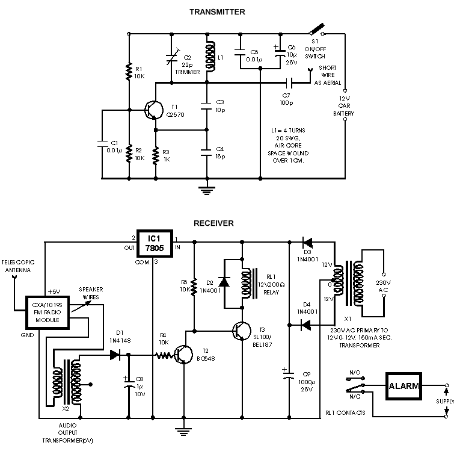
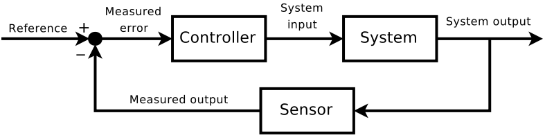
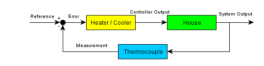

MAT100 for ELK og KOM
Uke 1
19.08.2015
Alexander Lundervold
institutt for data- og realfag
Sitter på E315. Stikk gjerne innom om du har spørsmål.
Trykk SPACE for å gå fremover, ESC for oversikt over slidesPraktisk info
- Lærebok: Matematikk for ingeniørfag
- Forelesninger: Onsdager og fredager. Øvinger på torsdager.
- Obligatoriske øvinger:
Fire stykk. Må gjennomføres for å få ta eksamen.
Første og tredje er elektroniske. Disse benytter WeBWorK
Se kursets itsLearning-side.
Introduksjon
MAT100 og MAT106 omhandler KALKULUS, dvs. forandring og forhold mellom funksjoner
Enkelt eksempel: Distanse og fart

- Gitt hvor bilen er i ethvert tidspunkt, hva er farten?
- Gitt farten, hvor er bilen etter en viss tid?
Smakebit:
Fysiske krefter


Mange krefter å ta hensyn til: Sentripetal, gravitasjon, drag, ... Beskrives med vektorer.
Drivstoff-forbruk kan finnes ved hjelp av integrasjon.
Smakebit:
Fysikken er en rik kilde til problemstillinger. Naturlige og menneskeskapte
Smakebit:

Strøm: endringsrate av ladning. Dvs. den deriverte.
Kapasitet: integrer for å finne kumulativ ladning
Smakebit:
Smakebit:

Hvilke dimensjoner bør en sylindrisk beholder ha for å minimere materialkostnaden?
Optimeringsproblem
Smakebit:
Konkret eksempel: Hvor varm er kaffen etter 20 minutt?

Differensialligninger
Smakebit:
Konkret eksempel: Hva er volumet av vasen?

Integrasjon
Smakebit:
Signalbehandling
Skal bruke sinus og kosinus til å splitte opp signaler


Smakebit:
Kommunikasjon og signalbehandling

Smakebit:
Kommunikasjon og signalbehandling

Nettverk
Smakebit:
Kontrollteori
 Smakebit:
Maxwells ligninger i elektromagnetisme
| Gauss' lov | $\nabla \cdot \mathbf{E} = \frac{\rho}{\epsilon_0}$ |
| Gauss' lov for magnetisme | $\nabla \cdot \mathbf{B}$ |
| Maxwell-Faraday-ligningen | $\nabla \times \mathbf{E} = -\frac{\partial \mathbf{B}}{\partial t}$ |
| Ampères lov | $\nabla \times \mathbf{B} = \mu_0 \left(\mathbf{J} + \epsilon_0 \frac{\partial \mathbf{E}}{\partial t}\right)$ |
Vektorer, derivasjon, differensialligninger
Trenger
funksjoner, grenser, derivasjon, integrasjon, vektorer, differensialligninger, ...
Hvorfor studere kalkulus?
- Danner en del av grunnlaget for elektroingeniørfaget
→ et viktig verktøy - Skjerper logisk sans, samt evnen til problemløsing
→ godt for hjernen - Kalkulus er og har vært en sentral komponent i mange beskrivelser og modeller av fenomener – naturlige og menneskeskapte. Uten kalkulus, intet moderne samfunn!
→ bra for dannelsen
I dag
Hva er en vektor?
MAT100 for ELK og KOM
Uke 1
21.08.2015
Noen tips
Jobb hardt!
Konkret
Før forelesning:
- Kikk på forelesningsnotatene fra forrige gang
- Skum gjennom de aktuelle delene av læreboken
Etter forelesning:
- Forsøk deg på alle ukeoppgavene
- Les grundig i forelesningsnotatene og i læreboken
- Bruk ekstraressurser linket til på itsLearning om nødvendig
- Still spørsmål dersom noe er uklart. I forelesning, via melding (epost eller itsLearning), eller i regneøvelsene
Noen tips
- Løs oppgaver! Ikke bare de obligatoriske, men også ukeoppgaver (og helst mer)
- Dann kollokviegrupper. Diskuter pensum og oppgaver.
- Spør om hjelp.
- Sjekk alternative kilder.
Praktisk info
- Referansegruppe.
- Snuble- og grublegrupper
Referansegruppe
- Består av 3-4 studenter (og meg)
- Fungerer som et bindeledd mellom studenter og foreleser/institutt/HiB
- Møtes et par ganger i løpet av semesteret for å diskutere hva som fungerer bra og dårlig, og mulige forbedringstiltak
- Kan potensielt forbedre undervisningen, både dette semesteret og i senere år
Snuble- og grublegrupper
Snublegruppe: For de som behøver litt ekstra hjelp med pensum. Kartleggingsprøve på itsLearning. Fire ganger. Første gang i uke 37.
Grublegruppe: Ekstratilbud for studenter som vil lære litt ekstra. Gå i dybden. Peke på anvendelser.
I dag
Fortsetter på vektorregningen
- Litt mer om enhetsvektorer
- Skalarproduktet. Hva er det og hva brukes det til?
- Vektorproduktet (kryss-produktet)